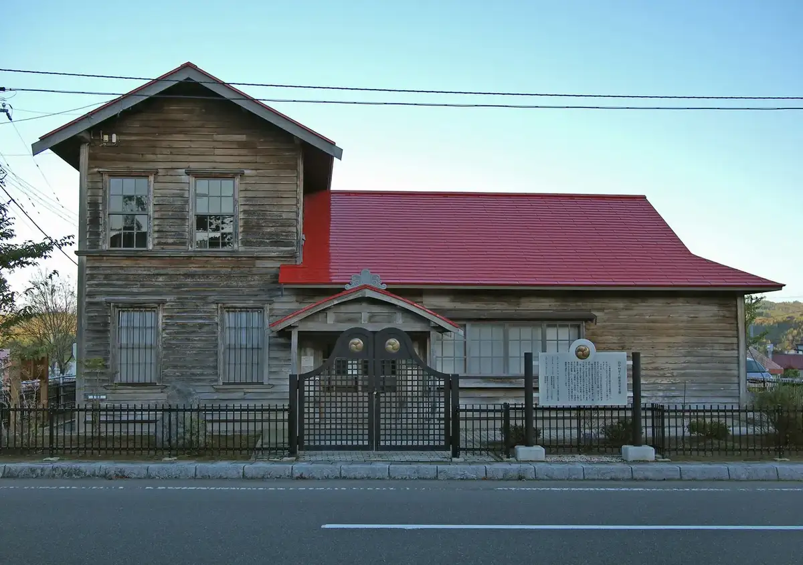
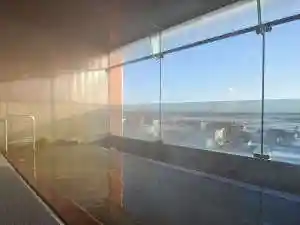
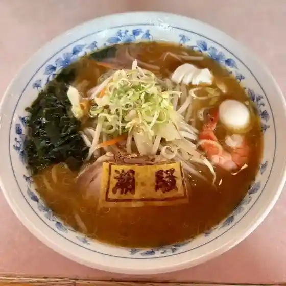
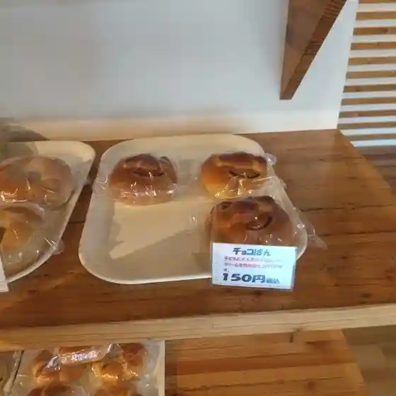
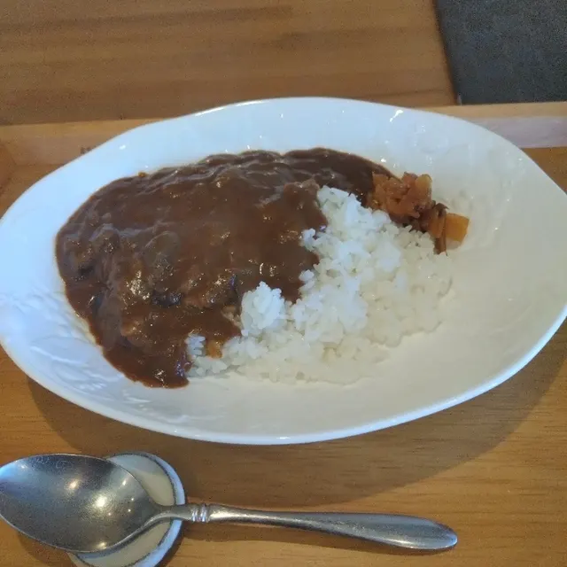
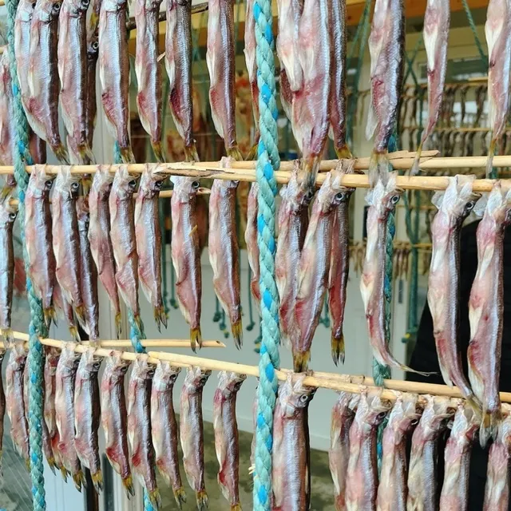
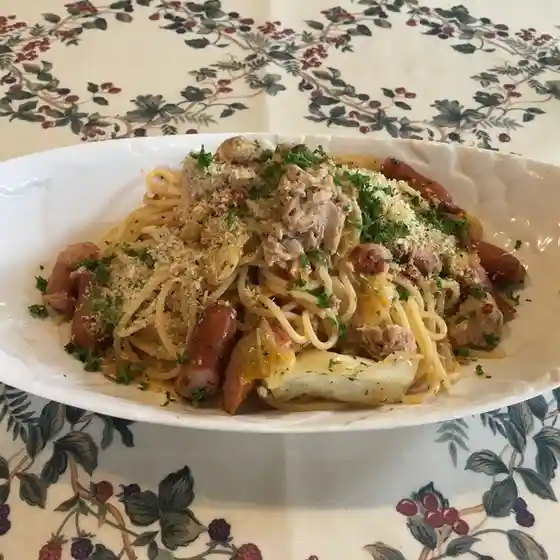
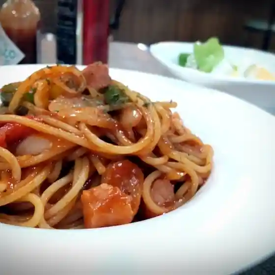
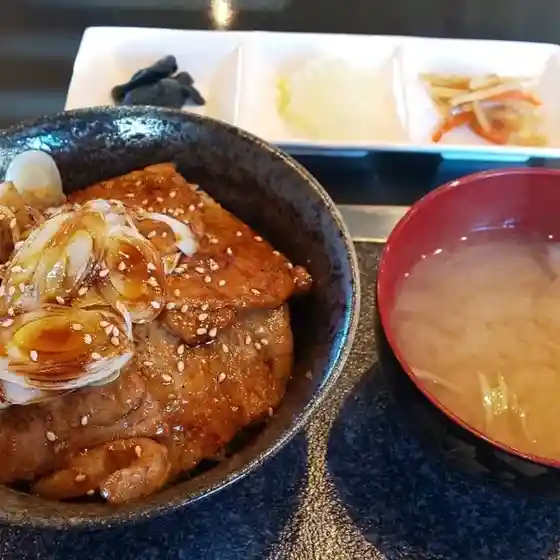

Mukawa
Mukawa · Hokkaido
Mukawa
Highlighted on the Hokkaido map.

Stay
LsHotel むかわ
Lshotel Mukawa
ホテル四季の風

Hoteru Shiki No Kaze
Dining
潮騒ラーメン 本店

Shiosai Raamen Honten
むかわ夢風船

Mukawa Yume Fuusen
Cafe 木蓮

Cafe Mokuren
マルダイ大野商店

Marudai Oono Shouten
プラドジュール イクタ

Puradojuuru Ikuta
カフェ なごみ

Kafe Nagomi
リキーズハウス

Rikiizuhausu
鉄板焼 輝

Teppanyaki Teru
夢風船
Yume Fuusen
おしん
Oshin
蕎麦家いごころ
Soba Ie Igokoro
豚ちゃん
Buta Chan
セブンイレブン 鵡川文京町店
Sebun'Irebun Mukawa Bunkyouchou Mise
食事処さとう
Shokuji Shosa Tou
うの寿し
Uno Hisashi Shi
ラーメン寳龍 むかわ店
Raamen Houryuu Mukawa Mise
リッチョ
Ritcho
きよもと
Kiyomoto
ケーキショップ おのでら
Keekishoppu Onodera
中一さとう
Chuuichi Satou
食事&喫茶 峰
Shokuji & Kissa Mine
DANK
Dank
セイコーマート 鵡川美幸店
Seikoomaato Mukawa Miyuki Mise
Bakery GRUE PLUME
Bakery Grue Plume